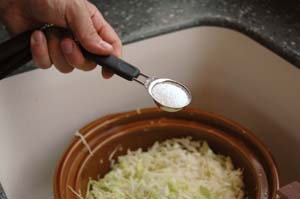

MEGAN PHELPS
In spite of its health benefits, most sauerkraut is loaded with salt. If you’re on a low-sodium diet, you may be better off avoiding sauerkraut entirely, or making your own at home with a low-salt recipe.